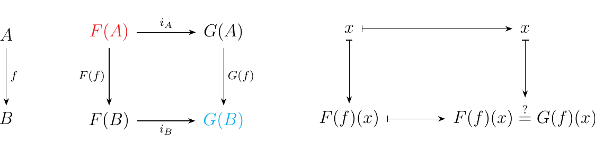

1.9. Natural Transformations
Suppose we have a pair of functors \(F, G: \cc \to \Set\). In particular, suppose that \(F(A) \subset G(A)\) for all objects \(A\). This means that for each \(A\), there exists an injection \(i_A: F(A) \to G(A)\).
Now this is a bit of an interesting construction since for any morphism \(f: A \to B\) in \(\cc\), there are now two ways we can get from \(F(A)\) to \(G(B)\).

As we have two different ways of traversing this diagram, are they equivalent? That is, is it the case that
In general, this isn't true. But one way (and as we'll see in the future, the only way) we can make this diagram commute is if
That is, if \(F(f)\) is a restriction of \(G(f)\). We summarize this observation by stating that, if \(F(f) = G(f)\big|_{F(A)}\) for all \(f\), then the inclusion \(i_A: F(A) \to G(A)\) is natural.
Let \(X\) be a topological space. Then we can create the abelian groups
Here, \(C_n(X)\) is the free abelian group generated by continuous functions of the form \(\phi: \Delta^n \to X\), where where \(\Delta^n\) is the \(n\)-simplex. Hence, elements are of \(C_n\) are of the form
where all but finitely many of the integer coefficients \(n_\phi\) are zero.
In algebraic topology, one observes that these abelian groups assemble into a chain via a boundary operator \(\partial_n: C_n \to C_{n-1}\) with the property that \(\partial_{n+1}\circ\partial_n = 0\) for all \(n\).
Now suppose that \(f: X \to Y\) is a continuous map between topological spaces. Then for each \(n\), there is an evident mapping between the chain complexes.
This is because if \(\phi: \Delta^n \to X\) is a singular map then \(f \circ \phi: \Delta^n \to Y\) is also a singular map because \(f\) is continuous. However this presents us with an issue, one we faced in the earlier example. On one hand, we have a map \(C_{n-1}(f) \circ \partial_n: C_n(X) \to C_n(Y)\). On the other hand, we have a map \(\partial_n \circ C_n(f): C_n(X) \to C_n(Y)\). But are these equivalent maps?
It's a simple exercise to show that this diagram does in fact commute, i.e., that \(C_{n-1}(f) \circ \partial_n = \partial_n \circ C_n(f)\) for all \(n\).
As a result, this "natural" result (again pun intended) gives us intuition on how to define a mapping between two chain complexes \(\{C_n\}_{n \in \mathbb{N}}\) and \(\{C_n\}_{n \in \mathbb{N}}\): : it is any family of maps \(\psi_n: C_n \to C'_n\) such that \(\psi_{n-1} \circ \partial_n = \partial_n \circ \psi_n\). Moreover, since we have a notion of objects (i.e, chain complexes \(\{C_n\}\) ) and morphisms (chain maps) this gives rise to a category Ch(Ab), the category of chain complexes of abelian groups.
When the two ways to traverse the diagram are equivalent, we call this behavior natural and it makes mathematicians very happy. Naturality, which is what we will refer to this property as, is ubiquitous in mathematics and functors give us a convenient way of conceptualizing this useful property.
Let \(F, G: \cc \to \dd\) be two functors. Then we define a mapping\footnote{Think morphism, because the word mapping here doesn't rigorously mean anything. That's because we don't really have a word to describe what a natural transformation really is. We have axioms, which we present, but we don't have a nice word. That nice word will turn out to be morphism, and you will see soon why. } between the functors
to be a natural transformation if it associates each \(C \in \ob(\cc)\) with a morphism
in \(\dd\) such that for every \(f: A \to B\), we have that \begin{statement}{ProcessBlue!10}
\end{statement} which amounts to \(\eta_B \circ F(f) = G(f) \circ \eta_A\). Thus we can imagine that \(\eta\) translates the diagram produced by the functor \(F\) to a diagram produced by \(G\). For example; if \(\eta\) is a natural transformation between \(F\) and \(G\), then we also see that the following diagram commutes:
and this diagram commutes
if the above diagram on the left commutes. Colors are added to aid the visualization in seeing how the natural transformation translates the diagram produced by \(F\) to the diagram produced by \(G\).
Let \(\eta: F \to G\) be a natural transformation. If \(\eta_A: F(A) \to G(A)\) \ is an isomorphism for each object \(A\), then we say \(\eta\) is a natural isomorphism.
Let \(K\) be a ring in CRng. Recall from Exercise 1.3.3 that
are functors. In that exercise we actually showed that the domain categories were \(\ring\), but for our purpose we can restrict these functors to the full subcategory \(\cring\).
Consider a commutative ring \(K\). Recall that for matrix \(M \in GL_n(K)\), we can take the determinant of \(K\); we are usually more familiar with this concept when \(K = \mathbb{R}\). However, it is a fact from ring theory that a matrix \(M\) is invertible if and only if the determinant \(\det(M)\) of \(M\) is in \(K^{\times}\). Since \(GL_n(K)\) is the set of all such invertible matrices, we see that we may associate each \(K\) with its determinant function
which sends an invertible \(M\in GL_n(K)\) to its determinant in \(K^{\times}\). To see that this morphism is a group homomorphism, we simply recall the determinant property
The claim is now that this family of morphisms assembles into a natural transformation. Specifically, that \(\det: GL_n(-) \to (-)^{\times}\). To see, this, let \(f: K \to K'\) be a homomorphism between commutative rings. Recall from ring theory that the determinant of a matrix \(M = [a_{ij}]\) with \(a_{ij} \in K\) is given by
where \(S_n\) is the symmetric group, and \(\text{sgn}(\sigma)\) is the sign of a permutation. Now for \(\det\) to form a natural transformation, we'll need that the diagram below commutes.
Note that \(f: K \to K'\) is a commutative ring homomorphism. To show this diagram commutes, consider any \(M = [a_{ij}] \in GL_n(K)\). Observe that
Hence we see that the diagram commutes, so that the determinant \(\det: GL_n(-) \to (-)^{\times}\) assembles into a natural transformation between the functors.
For a field \(k\), recall that we have two functors \(A^n(-), P^n(-): \fld \to \Set\) where
where \(\sim\) is the equivalence relation on the set \(A^{n+1}(k)\) described as follows: \((a_0, \dots, a_n) \sim (a'_0, \dots, a'_n)\) if \((a_0, \dots, a_n) = \lambda(a'_0, \dots, a'_n)\) for some nonzero \(\lambda \in k\). Geometrically, the equivalence relation identifies points which are lying on the same line passing through the origin.
As we noted before, these functors are particularly important in algebraic geometry. Now for each point \((a_0, \dots, a_n)\), denote \([(a_0, \dots, a_n)]\) as its equivalence class. Let \(\theta_k: A^{n+1}(k) \to P^n(k)\) be the function that maps a point \((a_0, \dots, a_n)\) to its equivalence class \([(a_0, \dots, a_n)]\). Our claim is that for each \(k\), the functions \(\theta_k\) assemble into a natural transformation.
That is, for a field homomorphism \(\phi: k \to k'\), the diagram
commutes. The reader is encouraged to fill in the details for this one. It's quite surprising that this does assemble into a natural transformation, because in general there is no reason to ever expect that the projection map, \(\pi: X \to X/\sim\) with \(\sim\) an equivalence relation, is, in any sense, natural. Its because most functions mess things up, and disorganize the equivalence classes!
The above morphism, \(\theta: A^{n+1} \to P^n\), actually has a very interesting geometric realization\footnote{This isn't important for the reader to understand. However, I do want to avoid blabbering abstract nonsense so that the reader knows we're doing real, relevant mathematics. And perhaps it might be motivation for the reader to check out an algebraic geometry text!}. If \(Y\) is an algebraic subset of \(P^n(k)\), then we can build the affine cone \(C(Y) = \theta^{-1}(Y) \cup\{(0,\dots, 0)\}\). With \(n = 2\), \(Y\) corresponds to a curve in \(P^2(k)\), which generates the surface \(C(Y)\) in in \(A^3(k)\).
Earlier, we showed that \(p_G: \grp \to \ab\) in which \(G \mapsto G/[G, G]\) was a functor. It turns out that the projection
forms a natural transformation between the identity functor \(1_{\grp}: \grp \to \grp\) on \(\grp\) and the functor \(p_G\).
To show this, consider the morphism \(f: G \to H\) in \(\grp\). We know that \(p_G\) induces a function \(f^*: G/[G, G] \to H/[H, H]\) defined as
Now let \(g \in G\). \begin{description} \item[\(\bm{T_H\circ f(g)}\).] On one hand, observe that
\item[\(\bm{f^*\circ (T_G(g))}\).] On the other hand, observe that
\end{description} Hence, we see that
so that the following diagram commutes
and hence \(T\) is a natural transformation.
The categories \(\finord\) and \(Set\bm{_F}\), are closely related categories. Recall that \(\finord\) has finite ordinals \(n = \{0, 1, 2, \dots, n-1 \}\) as objects with morphisms all functions \(f: m \to n\) where \(m, n\) are natural numbers, and the objects of \(\Set\bm{_F}\) are all finite sets (of some universe \(U\)) with morphisms all functions between such sets.
Obviously the objects and morphisms of \(\finord\) are in \(\Set\bm{_F}\). Thus, let \(S : **Findord** \to \Set\bm{_F}\) be the inclusion functor.
Define a functor \(\#: \Set\bm{_F} \to \finord\) as follows. Assign each \(X \in \Set\bm{_F}\) to the ordinal \(\# X = n\), the number of elements in \(X\). We can represent this bijective mapping as
Furthermore, if \(f: X \to Y\) is a morphism in \(\Set\bm{_F}\), associate \(f\) with the morphism \(\#f: \#X \to \#Y\) in \(\finord\) defined by
Thus we have that the following diagram is commutative:
and \(\theta\) acts a natural transformation between the two functors.
Note that if \(X\) is an ordinal number, we define \(\theta_X\) to be the identity function, which ensures that \(\# \circ S\) is the identity functor on \(\finord\). However, \(S \circ \#\) is not the identity on \(\Set\bm{_F}\), since the input will be \(X\) while the output will just be \(\#X\) (as \(S\) is just the inclusion functor.)
To end this section, we offer a topological interpretation of the concept of a natural transformation, one which has been known by category theorists since the 1960's, but a perspective which usually is not introduced since it does not really offer signficant pedagogical advantagous unless the reader is already aware of basic homotopy theory (in which case, they probably already know what a natural transformation is). I've nevertheless decided to include it because it is an interesting perspective.
Let \(X\) and \(Y\) be topological spaces. Consider two functions \(f: X \to Y\). Recall that a homotopy \(H\) from \(X\) to \(Y\) is a continuous function \(H: [0, 1] \times X \to Y\) such that \(H(0, x) = f(x)\) and \(H(1,x) = g(x)\). A simple example of a homotopy is when \(X = [0, 1]\). In this case, \(f, g: [0, 1] \to Y\) are simply two continuous paths in \(Y\). A homotopy, in this situation, between \(f,g\) is pictured on the bottom left.
On the above right we have the situation for when \(f, g\) start and end at the same point; this homotopy is know as a path homotopy.
Of course, a homotopy doesn't always exist. When it does, a homotopy can be interpreted as parameterizing, via \(t \in [0, 1]\), a family of continuous functions \(H_t: X \to Y\) which continuously deform \(f\) into \(g\)\footnote{Caution: a family of continuous functions does not conversely define a homotopy.}.
But this story is familar! A natural transformation \(\eta: F \to G\) between two functors
\(F, G: \cc \to \dd\) give rise to a family of morphisms \(\eta_A: F(A) \to G(A)\) which are parameterized by
the objects of \(\cc\) (which also satisfy the naturality property). Below we have this pictured of what this generally looks like.
So, what gives? Is the concept of a natural transformation somewhat logically and conceptually analogous to the concept of a homotopy? The answer is yes, and we can define a natural transformation in the following manner which is strikingly similar to the definition of a homotopy.
Let \(F, G: \cc \to \dd\) be functors. Let \(\bm{2}\) be the category with two objects \(0, 1\) and a single nontrivial morphism. A natural transformation \(\eta: F \to G\) is a functor \(\eta: \cc \times (\bm{2}) \to \dd\) such that \(\eta(-, 0) = F\) and \(\eta(-, 1)= G\).
Proving this is left as an exercise.
{\large Exercises \vspace{0.5cm}}
-
[1.] In what follows, let \(F,G: \cc \to \dd\) be a pair of functors. Interpret what a natural transformation \(\eta: F \to G\) is in each case.
\begin{itemize} -
[(i.)] Where \(\cc\) is a discrete category, and \(\dd\) is arbitrary. Separately, can we have a natural transformation when \(\dd\) is discrete?
-
[(ii.)] Where \(\cc\) and \(\dd\) are preorders.
-
[(iii.)] Where \(\cc\) and \(\dd\) are one-object categories whose morphisms are group.
-
[(iv.)] Where \(\cc\) is arbitrary and \(\dd\) is \(\cat\).
\item[2.] Show that Definition \ref{definition:nat_trans_homotopy} and Definition \ref{definition:nat_trans} are equivalent.
\item[3.]
Consider the initial discussion of this section. Prove that for two functors
\(F, G : \cc \to \Set\) such that \(F(A) \subset G(A)\) for all \(A \in \cc\),
the inclusion morphisms \(i_A: F(A) \to G(A)\) form a natural transformation
\(i: F \to G\) if and only if, for each \(f: A \to B\) in \(\cc\), we have that
\(F(f) = G(f)|_{F(A)}\).
\item[4.] Let \(\cc\) be a category, and consider two objects \(A,B\) so that we have the functors
- [(i.)] Let \(\phi\in \hom_{\cc}(B,A)\). Show that the family of functions
indexed by each object \(C \in \cc\), where \(\phi^*_C(f: A \to C) = f \circ \phi: B \to C\), forms a natural transformation \(\phi^*: \hom_{\cc}(A, -) \to \hom_{\cc}(B, -)\).
- [(ii.)] Show that every natural transformation \(\eta: \hom_{\cc}(A, -)\to \hom_{\cc}(B, -)\) is constructed in this way.
\item[5.] Let \(F: \cc \to \Set\) be any other functor. Interpret what a natural transformation \(\eta: \bullet \to F\) is. What about \(\epsilon: F \to \bullet\)?
\item[6.] For every ring \(R\) there is a natural inclusion homomorphism \(i_R: R \to R[x]\). Thus, let \((-)[x]: \ring \to \ring\) be the functor that sends a ring \(R\) to its single-variable polynomial ring \(R[x]\). Show that we have a natural transformation
where \(I: \ring \to \ring\) is the identity on \(\ring\).
\item[7.] Recall the category of \(G\)-sets is the category where \begin{description} \item[Objects.] All \(G\)-sets \(X\) (i.e., sets \(X\) such that \(G\) has a group action \(\phi:X \times G \to X\)) \item[Morphisms.] All \(G\)-equivariant morphisms (i.e., functions \(f:X \to Y\) such that \(f(g \cdot x) = g \cdot f(x)\)). \end{description} (Also see Exercise 1.3.6). Let \(X\) be a \(G\)-set with action map \(\phi: X \times G \to X\) and fix an element \(g \in G\). For such an \(X\), define the map \(\phi_X^g: X \to X\) where \(\phi_X^g(x) = \phi(g, x)\).
Show that for each \(g\), the maps \(\phi^g\) form a natural transformation \(I \to I\), where \(I: **G****-sets** \to **G****-sets**\) is the identity functor on this category. (Note that this is a nontrivial example of a natural transformation between a functor and itself!)
\end{itemize}